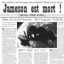
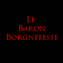

Forums galactiques > Assemblée Galactique : diplomatie officielle > L'ultime bataille
Pages : 1 2
| Mansfeld Respect diplomatique : 4380  16/01 ETU 23:49 | Score : 15 Détails Topic RP réservé. Merci de ne pas poster sans y être invité ! Et bonne lecture, pour le come-back du plus prolixe des politiciens ;)
Cellule du chancelier Yerog Mansfeld - Complexe 51 - Alfa Deimos Tschiiiiii - clic Le silence. La cellule était devenue son domaine. Rien n'avait bougé depuis plusieurs jours. Un souffle. Un souffle. Un souffle. Yerog ferma les yeux. Il les rouvrit. Tschiiiiii - clic Rien n'avait bougé. Il était bien vivant. Ses implants lui faisaient mal. On avait dû lui replacer un respirateur artificiel. La machine n'était pas très caustique. Tschiiiiii - clic Yerog poussa un soupir. Il songeait à Valorys, Jafhnar, Cosmic Roger, Lizaka, Grimaldus, Silence. Syrus aussi. Et quelques autres. Borgnefesse, Corum, Andeman, Scorbut, Mun Su. Un autre soupir. Sandalphon, Live-Ocin, Jameson, Requiem. Ils leur manquaient. La politique lui manquait. Sans doute plus que la liberté. Le major Agrippa terminait de prendre sa tension. L'électrocardiogramme était stable. Malgré les épreuves, Mansfeld était coriace. _____/\_____/\_____/\___/\_____/\_____/\_____ Ping Mansfeld, Yerog Mansfeld, que vas-tu faire maintenant ? Agrippa était resté silencieux. Cela faisait plusieurs jours que ses visites devenaient de plus en plus fréquentes. L'oeil exercé du vieux chancelier avait remarqué combien cet homme-la était inquiet. Tschiiiiii - clic Agrippa. Une légende. Son père biologique, en quelque sorte. " Alors, Major ? " Agrippa parut interloqué. Le scientifique était méconnaissable. " Oui Excellence ? " " Cela ne vous pèse pas trop ? " " P...Plaît-il ? " " Tout ce silence ? Cet insupportable silence ? " Agrippa se leva, l'air interdit. Il quitta la cellule. Le sas émit un sifflement. Et à nouveau le silence. Un souffle. Un souffle. Un souffle. Tschiiiiii - clic " Ah, je t'avais oubliée, toi. " Mansfeld observa la machine qui le fournissait en oxygène. Un cadran attira son regard. Un code. Dans les oscillations de l'électrocardiogramme. Un code primitif. Du binaire. "Nom de Dieu. Des jours que cette vieille casserole d'Agrippa me parle ! Mon vieux Yerog, ton cas ne s'arrange pas. Tu vas finir comme Melpomène si ça continue..." Tschiiiiii - clic 01001100011011110011001110111100000001110100001 Les chiffres s'alignaient. Se bousculaient. Un flot d'informations agressait Mansfeld. Des mois de captivité l'avaient privé de toute information extérieure. Et voilà qu'Agrippa l'informait du désastre. Genèse, Ruprecht, Thorn, Sélène. Tous étaient devenus fous. Tschiiiiii - clic 01001100011011110011001110111100000001110100001 Les chiffres. Les un et les zéros se suivaient sans se ressembler. Pour chaque fréquence, des mots, des phrases, des idées. Des idées de liberté, d'honneur, d'espoir. Une femme-cobaye était tombée enceinte. La première depuis de longues années. Mansfeld sentit sa gorge se nouer. Il prit connaissance des guerres, de l'imposteur qui se faisait passer pour lui, de son frère Ruprecht qui était devenu fou. Les chiffres étaient implacables. Cruels. Tschiiiiii - clic 01001100011011110011001110111100000001110100001 Agrippa voulait le sauver, lui. Il travaillait pour les cylons et le général Thorn, pensant agir pour le bien du peuple. Puis il s'était aperçu de la supercherie. Thorn voulait le pouvoir. Thorn était un cylon. Agrippa a contacté les résistants. L'heure de la liberté est proche. Les chiffres deviennent moins précis. Le vieux chancelier a la respiration saccadée. On lui cite de nombreux noms. Des morts. Beaucoup de morts. On lui apprend pour la nouvelle République. Le retour du fils de Valorys. Le brillant développement de la corporation démocrate. La fusion entre les commandants de l'Aurore et les Fils de la Liberté. Et puis, la venue prochaine de l'apocalypse. Les chiffres ne mentaient jamais. Tschiiiiii - clic 01001100011011110011001110111100000001110100001 Mansfeld déglutit. Agrippa allait le sauver. Il allait le sauver. Le sauver. Agrippa allait le sauver. Un souffle. Un souffle. Un souffle. La cellule était misérable. Mansfeld se prit le visage dans les mains. Et seule une machine anonyme lui répondit. Elle détenait le secret de l'univers. Mansfeld allait bientôt être de retour. | ||
| Mansfeld Respect diplomatique : 4380 20/01 ETU 21:07 | Score : 14 Détails Bunker principal de commandement - complexe 51
Deux jours que les troupes Vaarlags se sont déployées. Leurs alliés de Proculis n'allaient pas tarder eux non plus à être opérationnels. Les commandants Andeman et Acanith étaient attendus en personne. PssSSssschhhhh "Maudite flotte. Elle perce le plastacier et même le béton." Le complexe 51 était comme un immense estomac. Et la pluie de l'Aquilon qui s'infiltrait dans ses flancs allait finir par digérer les centaines d'hommes et les tonnes de matériel qui faisaient vivre le dernier bastion du général Thorn. Les troupes du Préfet avaient remporté les principales batailles urbaines, dans les cités souterraines. Les hordes des Fils de Mansfeld, elles, avaient détruit plusieurs bunkers de défense, ainsi qu'une ferme d'insémination, détruisant plusieurs centaines d'embryons fertiles. Et toujours pas de renforts cylons. "Rapport complet sur les effectifs et patrouilles des deux derniers jours, lieutenant." "Effectifs actuels estimés à 1500 soldats d'élite Vaarlags déployés dans les premiers niveaux de défense et les avant-postes, 2000 troopers lourds déployés dans les lignes de défense principales, et 500 centurions cylons déployés dans le complexe scientifique et aux alentours du bunker de commandement. Couverture aérienne impossible à cause de la pluie, général." On pouvait donc oublier le soutien des croiseurs lourds. "Poursuivez." "Les patrouilles seront à portée de communication dans six heures. Les relais de communication ont dû être endommagés par la pluie. Un message nous est parvenu de la cité du Chapitre, la balise du maître Ignacio. Il est mort, général." "La balise est-elle encore activée ?" "Affirmatif, général. Contact visuel possible par capteurs infrarouges." Une vue directe sur la salle d'audience du Chapitre. Le sacrifice d'Ignacio avait été utile. Une dizaine de silhouettes. Et puis des formes humanoïdes assez vagues, froides, apparemment étendues sur le sol. Sélène et Ruprecht étaient-ils vivants ou morts ? "D'autres victimes ?!" "Visiblement, général. Impossible de les identifier." PsSSssccCCccchhhh Foutue pluie. "Passez en phase d'alerte 1, lieutenant. Et envoyez des renforts dans les lignes de défense principales. Préparez-vous à accueillir les états-majors Vaarlags et Proculiens sur la passerelle de commandement." Ainsi, tout va se jouer ici, dans le ventre de la gorgone... HRP : N'oubliez pas qu'il s'agit d'un topic RP réservé. Pour les participants, n'oubliez pas d'attendre mon signal pour poster ;) | ||
| Jameson Respect diplomatique : 559  22/01 ETU 22:56 | Score : 11 Détails Ligne de front - A porté de tir du Complexe 51 - Alfa Deimos
"Jameson ? Qu'est ce que vous foutez là ? Vous tenez à peine debout !" Corum regardait Jameson approcher, hésitant quant à la conduite à tenir. Depuis qu'il avait reçu cette blessure au flanc, Jameson ressemblait à un de ses fantomes des batailles : pâle, avançant lentement, et pourtant rien ne semblait plus l'arrêter. Il donnait l'impression d'avoir mis un pied dans l'au-delà et de s'être arrêté en chemin : la mort ne voulait plus de lui, et il semblait devenu son meilleur envoyé. Corum se souvenait : après l'attaque éclair du premier centre de communication, ils avaient tenté de prendre le second par surprise mais l'alerte avait été donnée : ils s'étaient retrouvés coincés dans une recoin de rocher par des tirs lours et alors que l'étau se refermait, Jameson avait balancé tout ce qui restait de grenades aveuglantes et était sorti tout seul, dans sa combinaison imbibée de sang. Deux minutes après, ils l'avaient entendu les appeler : il se tenait assis parmi les cadavres des défenseurs qui s'étaient entretués en essayant de l'abattre, alors que lui avait simplement tiré sur tout ce qui passait à sa portée... "C'est bon, Corum. Je tiens debout... Borgnefesse et Josie veulent savoir comment ça se passe de ce coté. Eschen n'est pas là ? - Non, il continue de surveiller les accès. On a perdu du monde en deux jours d'attaque sur le complexe. - silence - - Eux aussi... Davantage que nous : les Fils de Mansfeld sont des combattants redoutables : même face au Varlaag, ils n'ont pas bronché. - En effet, ils sont exceptionnels : pour riposter comme ça face à un Varlaag en pleine charge, il faut un sacré courage... - Corum, il faut qu'on rejoigne les autres. Il est temps d'en finir avec l'assaut de ce complexe..." Ils prirent en silence la direction de l'abri rocheux où se reposaient dans un demi-sommeil ceux qui avait combattu autour du complexe ces dernières heures. La pluie diluvienne des derniers jours les avait protégé contre les forces aériennes et leur permettait un harcellement permanent, mais elle ne durerait pas : il fallait forcer la décision pour avoir une tête de pont dans le complexe avant que les nuages se dissipent. Borgnefesse et Josie s'était assis au sol et chuchotaient à l'écart lorsqu'ils arrivèrent : Josie était partisante d'une entrée fracassante : dynamitage et entrée en force, alors que Borgnefesse privilégiait une infiltration par la ruse. Jameson et Corum les rejoignirent et Corum se joignit à la conversation en faisant remarquer que le système d'aération avait été touché et permettait un accès dans la .... .. ........ Jameson s'endormit. | ||
| Mansfeld Respect diplomatique : 4380 23/01 ETU 14:41 | Score : 10 Détails Passerelle de commandement – Bunker du général Thorn
PssccCchhhhh La pluie ne cessait pas. Et les premiers rapports étaient tout aussi maussades que le temps. « Nous ne disposerons pas de couverture aérienne, ni de renforts extérieurs. Nous sommes condamnés à attendre que cette foutue pluie acide cesse. Vous avez vos ordres, messieurs, au travail. » Les officiers tournèrent les talons. Seuls les hauts gradés et les techniciens restèrent sur place. Le général Thorn défit un bouton de son col. Une barbe de quelques jours lui irritait la peau. Il n’avait pas dormi depuis longtemps. Le silence régnait. Ils attendaient. Thorn observait les écrans de contrôle. Toujours pas de nouvelles des patrouilles envoyées vers les relais de communication. PssccChhhhhh Une goutte coruscante, tombée du plafond, lui frôla l’oreille dans une odeur de souffre. Un officier de liaison s’agita. « L’état-major Vaarlag est enfin arrivé, général. Le commandant Andeman sera là dans quelques instants. » Thorn éponga son front. L’atmosphère du bunker de commandement était atrocement chaude et humide. « Tout cela sent le souffre… faites préparer des distilles pour nos hôtes. Et faites-les entrer dès qu’ils se présenteront aux points de contrôle. » Nous verrons si la réputation des Vaarlags au combat est une légende… ou pas. HRP : Petit rappel aux participants : attendez mon signal avant de poster ;) | ||
| andeman Respect diplomatique : 1393  24/01 ETU 11:26 | Score : 8 Détails Passerelle de commandement – Bunker du général Thorn
Le visage impassible, habillé de l'armure de combat, le visage transformé et déformé de colére et l'abus des drogues, Andeman attendait que le sas de la navette s'ouvre. Alfa deimos... Lieu de son désaveu jadis et des erreurs de son emportement... La navette avait filé trés rapidement avec la pluie acide, ces fameuses plaies, est ce que cela finirait un jour? Andeman savait que ses troupes avaient déjà débarqué depuis 2 jours, mais il ignorait absolument ou elles étaient posté, il en saurait certainement plus d'ici peu. Sa crise, et son overdose de Celaciite l'avait retardé grandement dans le bon déroulement du plan, fort heureusement cela n'avait eu apparemment aucune incidence. Le hangar était dégagé, il n'y avait là qu'une escouade de troopers lourd et un officier. descendant rapidement ce dernier salua le Vaarlag. -Commandant, c'est un plaisir, veuillez me suivre. Andeman surpris devant tant d'empressement ne dit mot et emboita le pas. Jetant un regard sur l'endroit il se rendit compte qu'il s'agissait sans doute d'un bunker de grandes envergure, avec niveaux souterrains, et zones labyrinthiques. Un sentiment désagréable lui parvint. "Cela revient à dire que ca sera notre cerceuil, défendre en étant acculé de la sorte, ca n'est jamais bon... Qu'importe il en ferait part au général Thorn. Avant de quitter l'immense hangar d'étranges droides de combat attira son regard, ces choses étaient assez grandes, et plutot bien armé pour des droides, il devait le reconaitre Andeman en fut impressionné. Ils prirent un couloir. Les murs scuintaient comme une plaie purulente l'eau acide d'Alfa deimos. Il eut un geste de répugnance. Et dire qu'il allait peut etre y rester là... Dans ce trou à rat... Les deimosiens sont d'excellents orateurs, mais dans l'art militaire, cela laisse à désirer... Cela aussi il verrait en temps voulu. Andeman ressentit une chaleur étouffante, il n'y avait pas preté attention jusque là... Ajoutez à cela cette moiteur avec l'eau qui s'infiltre, vous obtenez une fournaise du diable, cela ne génait pas outre mesure le Vaarlag, Amenoa avait un climat chaud et par endroit tropical... Combient de temps tiendraient ils? Contre qui allaient ils se battre? Il en avait une vague idée, mais... TSSscccchhhh L"officier le fit entrer dans la salle de commandement. Thorn était là avec son état major devisant sur des choses obscurs, de part et d'aute de la salle des consoles aux témoins multpiles s'occupant a coup sur du bon fonctionnement du bunker. Des enseignes allaient et venaient dans une danse parfaitement réglée et donnaient les rapports à ce fameux Thorn... Au centre de cette salle se trouvait la table de commandement, donnant une vision globale et précise de la situation geographique du bunker. cependant ne sachant pas grand chose il espérait de plus amples explications. Il se retrouvait là un peu comme par enchantement... A lui de se ressaisir au plus vite. Ce dernier le vit et eut un sourire plus ou moins engageant, Andeman inclina la tete et alla le rejoindre avec ses officiers. Il manquait encore Acanith. Général c'est un honneur. Pouvez vous me dire ou sont mes hommes, et me faire un rapport assez bref de la situation ? Je viens tout juste d'arriver avec le minimum d'infos... | ||
| Mansfeld Respect diplomatique : 4380 25/01 ETU 21:11 | Score : 4 Détails Ligne de front - à portée de tir du complexe 51 - Alfa Deimos
Jameson était mal en point. Foutus Vaarlags. Que venaient-ils faire ici ? Eschen retournait sans cesse la question. Bien que les premiers objectifs aient été atteints, la présence de troupes étrangères était un élément de surprise. "Commandants Corum et Borgnefesse, que pouvez-vous nous dire à propos des Vaarlags ? Leur commandant n'était-il pas l'un de vos alliés ?" Eschen observa Borgnefesse et Josie, qui débattaient du choix tactique à adopter pour pénétrer dans le complexe. La lassitude gagnait la troupe. Et Jameson avait besoin de soins adaptés. Un seul homme pouvait encore le remettre sur pieds. "Agrippa... Sven Agrippa..." Eschen eut un hocquet. La violence du choc le bouleversa. Il sortit son codex. "Merde !! Mais quel.. !" Agrippa. Cette vieille casserole les avait menés jusque là. Qui avait suggéré d'attaquer les postes de communication ? Qui avait préparé le plan d'attaque ? Eschen savait que c'était Sélène qui avait préparé l'opération depuis des mois, bien avant la chute du Chapitre. Mais jamais elle n'avait eu accès au complexe. Jamais elle n'aurait pu, toute seule, connaître l'emplacement des centres de communication. Eschen se tourna vers ses compagnons, le visage blême. Il venait de relire les plans d'attaque. La vérité venait de lui sauter aux yeux. Un code. Un code primitif binaire, caché dans le plan d'attaque. Le major Agrippa s'adressait directement à lui ! "Dieu est grand mes frères..." Une larme venait de perler sur sa joue. Borgnefesse et Josie se turent, Corum le toisa d'un air dubitatif. Eschen pleurait ? "Nous...nous avons un allié dans la place mes frères..." Josie le rudoya de ses sarcasmes. "C'est cela qui vous fait pisser comme une gamine ? Vous trouvez pas qu'on en a déja assez avec cette foutue pluie ?" Eschen lui sourit. "Non... Mansfeld, Yerog Mansfeld, est vivant. Et il est ici..." Le silence figea la troupe, coincée dans une crevasse avoisinant les premiers bunkers du complexe. Seule la pluie acide continuait de tomber. PsscccHhhhh | ||
| Corum Respect diplomatique : 1323  30/01 ETU 16:25 | Score : 14 Détails Ligne de front – A portée de tir du complexe 51 – Alpha Deimos
La nouvelle les avait laissée sans voix…Mansfeld…Vivant…et peut-être à moins d’une lieue de leur emplacement actuel. Corum se leva et jeta un regard noir en direction du complexe 51. Voilà plusieurs jours déjà que la guerre de tranchées durait dans les crevasses escarpées qui avoisinaient les premiers bunkers du complexe. De nombreux morts. Dans chaque camp. Les fils de Mansfeld possédaient un avantage certain car ils étaient en résistance contre une oppression qui ne cessait de révéler un peu plus chaque jour la noirceur de sa trame. Ils avaient fait de larges dégâts dans les rangs des Vaarlags, qui étaient pourtant loin d’être des néophytes en matière de guérilla. Les hommes du Commandant Andeman tenaient leurs positions comme de véritables cerbères, attendant la mort sans ciller…Corum se tourna vers Eschen.. « Andeman…Il a un temps appartenu à la Corporation démocrate. Mais je suis en exil depuis si longtemps que je n’ai pas eu l'honneur de le rencontrer en chair et en os, les exploits guerriers de ce commandant sont réputés dans toute la galaxie, au même titre que ses brusques changements d’humeur. La bête qui était tapi dans les tréfonds de son âme en faisait un adversaire redoutable autant qu’un allié versatile. C’est cependant un homme valeureux à la sensibilité démocratique avérée.. Comment diable s’était-il retrouvé acoquiné avec ce satané général Thorn ?!! Des renseignements obtenus auprès des prisonniers laissent entendre qu’Acanith, un autre représentant de la Corporation Démocrate, s’est également rangé du coté des traitres d’Alpha Deimos. Voilà donc que je m’apprête à livrer bataille contre mes anciens alliés..Et ce, aux côtés de mon ancien ennemi, ah..les ironies de la guerre.. » Il se tourna un instant vers Borgnefesse..Puis reprit.. « Andeman et Acanith ne doivent pas savoir que Mansfeld est vivant et qu'il est retenu ici, autrement je suis convaincu qu’ils auraient déjà rejoins notre cause.. Je jure de ramener la tête de ce général pour toutes ses duplicités ..Quoi qu’il m’en coûte.. » A ses côtés, un râle de douleur ... Jameson était mal en point et tentait de reprendre des forces. Il était tombé dans un sommeil profond et agité, sans demander son reste.. S’il ne recevait pas des soins dans les prochaines 48 heures, sans doute succomberait-il à ses blessures. Il était grand temps de passer à l’action.. « Nous devons sortir de là et nous mettre en mouvement. Notre position nous expose dangereusement, nous sommes à portée de tir des tireurs d'élite du complexe. Nous devons trouver un moyen de pénétrer dans ce complexe et de retrouver Mansfeld.. » Près de 4000 hommes leurs faisaient face. Ils étaient déjà parvenus à prendre deux relais de communication au prix de nombreuses pertes, mais dorénavant la partie se compliquait sérieusement...Jameson blessé..Ils se retrouvés coincés dans une crevasse avec tout au plus une vingtaines d’hommes seulement pour mener un assaut frontal…La situation paraissait perdue d’avance. Seule une entrée discrète pouvait leur permettre de prendre leurs ennemis par surprise..Une possibilité avait été évoquée.. Vous disiez qu’une bouche d’aération avait été endommagée..Peut-être serait-il possible de…. Tandis qu’il scrutait l’obscurité dans l’espoir de trouver une brèche dans la défense ennemie, une ombre attira son attention, une silhouette esseulée se faufilait dans une crevasse en contrebas de la leur.. Il tenta de discerner les traits de l’inconnu, en vain.. « Mais qui serait assez fou pour.... » | ||
| Mansfeld Respect diplomatique : 4380 31/01 ETU 00:49 | Score : 5 Détails Ambiance sonore recommandée :
http://www.radioblogclub.com/open/131028/this_is_the_end/The%20Doors%20-%20The%20End%20-%2011 Bunker principal de commandement - Complexe 51 PsSssSchhhh La pluie. Toujours la pluie. L'état-major Vaarlag menait la vie dure au général Thorn. Ces guerriers farouches étaient tous très tétus, et leur code martial était bien différent de la très stricte et classique discipline de l'armée Deimosienne. Seuls les centurions Cylons, ces horribles machines à tuer qui constituaient la garde d'élite du général, restaient impassibles à la nervosité, la chaleur étouffante, et aux mauvaises nouvelles. Thorn soupira. Il venait de recevoir les derniers rapports. Rapport confidentiel - Service de renseignements - Sécurité du complexe : Patrouilles Alfa, Delta, Oméga sur sites de reconnaissance - MIA - Sécurité du complexe : Patrouilles de sécurité Vaarlags et cohorte de troopers lourds sur sites de communication - MIA - Sécurité du complexe : Communications géostratégiques et diplomatiques impossibles - Emission/Réception impossible, bases de données inaccessibles. - Stratégie planètaire : Retraites successives des troisièmes et cinquièmes armées, reddition de la première armée dans la cité du Chapitre auprès des forces du Préfet Mansfeld - Défaite urbaine généralisée - lignes de ravitaillement coupées. - Aucun renfort disponible pour la défense du complexe - Potentiel maximum atteint. Bon Dieu, comment en sommes-nous arrivés là... Le général Thorn s'épongea le front. Il avait fait rassembler tout son état-major, en présence des officiers Proculiens, qui s'étaient enfin manifestés. Il était temps pour lui d'abattre ses meilleures cartes. "Lieutenant, passez immédiatement en code d'alerte 2, tout le monde à son poste de combat. La base est probablement attaquée." Un léger murmure s'éleva des officiers présents. Thorn fit un geste de la main et imposa le silence. "Messieurs, inutile de nous voiler la face. La situation de notre armée est catastrophique. Les troupes du Préfet Ruprecht Mansfeld ont définitivement pris la capitale." Le silence se fit. Thorn se tourna vers les commandants et stratèges étrangers. "Messieurs, il est temps pour moi de vous informer de ce qu'il se fabrique ici, dans le complexe." PsSSssccchhhhh Foutue pluie. Thorn leur expliqua tout. Son accord avec les cylons et le major Agrippa, la création des fermes d'insémination, les expériences visant à guérir la stérilité des femmes Deimosiennes, la nécessité de tromper la vigilance de Genèse. La nécessité pour le complexe d'être protégé jusqu'au bout. L'avenir de la civilisation Deimosienne en dépendait. Et les présages d'une éventuelle apocalypse laissaient peu de temps aux savants du général Thorn pour mettre leur travaux en sécurité. "Une fois pour toutes, messieurs, je vous demande de croire en moi. Je désire la survie de mon peuple. Le Préfet Mansfeld est un fou sanguinaire, il ne cherche qu'à entraîner notre peuple dans sa chute. Quant aux fils de Mansfeld..." Le général tappa du poing sur la table. Ses yeux flamboyaient de rage. "...ce ne sont que des fanatiques manipulés par une folle hystérique ! Cette Sélène est une ancienne maîtresse du Préfet ! Une catin ! Jamais, jamais je ne me soumettrai à ces voyous !" Le général fit une pause. Il s'épongea à nouveau le front. Il se calma "Bien, excusez-moi. Officiers de Proculis, je manque à tous mes devoirs. Soyez les bienvenus parmi nous. Vous connaissez nos moyens. Avant de vous exposer notre stratégie, nous devons connaître les objectifs de l'ennemi. Messieurs, votre opinion ?" Une carte holographique du complexe fût projetée sur la table de commandement. PsssCccchhhhh Foutue pluie. Le général Thorn avait joué ses cartes. Mais il avait gardé ses jokers. Quelque part dans sa cellule, le chancelier Mansfeld patientait. Son heure viendrait... | ||
| Thomas Respect diplomatique : 335 31/01 ETU 01:55 | Score : 10 Détails Ligne de front, à proximité d'Eschen, Corum, Borgnefesse et Jameson.
Thomas ne savait plus comment il arrivait à avancer. La désolation, le bruit assourdisant de la pluie et la présence de Mephistopheles dans son esprit déséquilibraient peu à peu celui-ci. Il ne savait pas ou il était, il ne savait pas ou il allait, et il ne savait pas pourquoi. Il était la seule personne vivante à des kilomètres à la ronde, peut-être même la seule sur toute cette foutue planète, et il commençait à penser que lorsqu'il repartirait de cet enfer, il serait le seul dans tout l'univers à respirer. En étant optimiste, puisque sa seule survie était fortement compromise. Son état physique n'était pas plus reluisant: la vieille combinaison Aquilon qu'il portait était déchirée à certains endroits, et la pluie avait réussi à s'y infiltrer avant qu'il ne les bouche avec un peu de sa mousse de survie, qui miraculeusement résistaient à la pluie. Résultat: Les brûlures le faisait affreusement souffrir, et une légère fièvre avait confirmé ses craintes d'infections. Il n'avait pas mangé ni bu depuis deux jours, si ce n'est une bouchée de mousse de survie la nuit dernière. Et il marchait en titubant, sans s'en apercevoir, aveuglément, trébuchant à intervalles réguliers sur les roches qui parsemaient les crevasses. Mephistopheles était resté silencieux depuis plusieurs heures. Thomas, arrête-toi. Celui-ci obéit. Quelqu'un t'a vu. Le jeune roi sembla se réveiller. Quelqu'un? Cela voulait dire qu'il y avait un être vivant dans les environs. -Ou est-il? Reste ici, je vais voir. Mephistopheles s'absenta une seconde. Lorsqu'il revint, sa présence semblait plus... heureuse. Il y a des hommes, la-haut. L'un d'eux est blessé, gravement. Je... Tu le connais. J'ai déja connu les autres. Rejoins-les. Thomas sentit qu'on le dirigeait vers une colline très escarpée. Il fit un premier pas, puis un second. Entre chque pas, il faisait une pause pour ammasser un peu d'énergie. Après qu'il eut parcouru une distance qui lui parut infime, il lui sembla qu'il distinguait une silhouette indécise, en haut. Sa marche s'accéléra. Arrivé à la moitié de la "colline", (qui avait plus l'air d'une falaise insurmontable, maintenant qu'il en grimpait les flancs) il se mit à ramper, les muscles de ses jambes ne pouvant plus fournir assez d'effort. Son escalade dura plusieurs heures, sans aucune pause. À plusieurs moments, il crut ne jamais y arriver, mais Mephistopheles lui insufflait un regain d'énergie suffisant pour continuer, comme une main qui l'empêchait de tomber, sans toutefois l'aider à monter. Finalement, Thomas atteignit le sommet. Il se releva et fit deux pas, mais ne put continuer. La pauvre créature qu'il était devenue tomba inconscient, et glissa sur le sol, jusqu'aux pieds de Corum. J'espère ne pas avoir fait d'erreur... | ||
| Acanith Respect diplomatique : 1200  03/02 ETU 01:56 | Score : 7 Détails Bunker Principal de Commandement-Complexe 51
L’Etat Major de Proculis. Les Vaarlags. Les Cylons. Le Général Thorn. Conseil Géostratégique. Jusqu’à présent, ni Jack ni aucun de ses subordonnés n’avait pris la parole. Ton tour est venu, Jack Hopkinson... Toute réflexion doit se baser sur les informations disponibles. Analyse ton environnement et base ton raisonnement dessus. Antequam agatis, cogitate. Et c’est ce que faisait Jack. Il écoutait, analysait et concluait. Bientôt viendrait le temps d’agir. Thorn évoquait les tentatives de FIV… Ainsi nous assistons à une expérience scientifique majeure… Acanith va être fou de rage d’avoir raté ça. Les Fils de Mansfeld. Variable quasi-aléatoire. Et nos ennemis. Khul Wahad ! Nous risquons des dommages internes. Prudence est plus que jamais de mise. "...sont que des fanatiques manipulés par une folle hystérique ! Cette Sélène est une ancienne maîtresse du Préfet ! Une catin ! Jamais, jamais je ne me soumettrai à ces voyous ! » Du coin de l’œil, Jack nota la réaction d’Elissa, Bashar des Equipes Némésis. Il savait que la jeune femme allait utiliser son entraînement psycholinguistique pour prévoir les réactions du Général. Une tactique courante. Il savait aussi qu’un homme comme ça serait difficile à analyser. L’apparente colère cachait quelque chose. Jack avait décelé l’incongruence comportementale. Extrêmement subtile, au demeurant. L’éclat de voix du Général ne parvenait pas à dissimuler totalement sa profonde froideur. Cette colère n’est pas feinte mais elle sert vos intérêts, Général. Vous la maîtrisez et l’utilisez. Pourquoi ? Comme toujours, les informations nous font défaut. … Jack avait l’impression d’être aveugle. "Bien, excusez-moi. Officiers de Proculis, je manque à tous mes devoirs. Soyez les bienvenus parmi nous. Vous connaissez nos moyens. Avant de vous exposer notre stratégie, nous devons connaître les objectifs de l'ennemi. Messieurs, votre opinion ?" Jack baissa les yeux sur la carte. Le coup classique… entre les conditions climatiques et le niveau de confidentialité, personne ne devait s’attendre à ce que le Complexe soit un jour découvert et attaqué. Ce n’est qu’un ensemble de bunkers somme toute normaux. Près de lui, le troisième Proculien, Yuri Adamov, Bashar de l’Armée Régulière, désigna plusieurs points des installations. -Messieurs, je suis le Bashar Yuri Adamov. Je considère que ces points seraient tout à fait vulnérables à une attaque par des forces d’élites ennemies. Nous allons déployer une partie du Détachement dès que vous nous aurez fourni les combinaisons Aquilon nécessaires. J’estime que les forces adverses porteront l’offensive ici et ici à la première accalmie. -Par ailleurs, renchérit Jack, il est essentiel de connaître les déplacements des troupes ennemies. Nous enverrons les Equipes Némésis dans le no man’s land pour surveiller ces dernières. Les Cytocombinaisons devraient leur permettre de braver la pluie acide, qui elle même leur servira de couverture. De plus, les Biochimistes qui nous ont accompagné peuvent installer des pièges biologiques dans tout le périmètre et prêter main-forte à vos scientifiques. Nous en connaissons un rayon en embryologie moléculaire, acheva Jack avec un sourire. Elissa hocha imperceptiblement la tête. Surveiller-derniers. Le message dans le message. Garde un œil sur les Cylons. Une inconnue de plus dans un système déjà presque insoluble… Plusieurs Officiers Deimosiens réagirent aux paroles de Jack. Thorn, lui, resta impassible. Une expression indéchiffrable semblait définitivement gravée sur ses traits burinés. Il est impossible de ne pas communiquer, Général. Tout comportement est un message. Paradoxalement, l’absence de comportement est un message encore plus clair. Vous ne nous avez pas tout dit… Elissa pâlit soudainement, mettant un terme aux réflexions de Jack. Elle désigna la sphère systémique holographique qui occupait le plafond du bunker. Des séries de nombres s’affichaient à toute vitesse. Des coordonnées. Vecteurs-intrusions-système. Des vaisseaux arrivaient. Et vu leur nombre, de gros problèmes arrivaient avec eux… Le Communicateur du Bashar Suprême vibra. Communiqué prioritaire Emetteur : CLA « Morgenstern » Origine : Deimos, orbite haute Bashar Suprême Les cosmoradars du Morgenstern viennent de détecter une flotte de combat à moins de 0.5 UA. D’après la configuration des escadres, ces vaisseaux sont parés à la bataille et se dirigent vers Alfa Deimos. Nombre estimé : 2.5*10^6, en augmentation rapide. Activation des systèmes de biocamouflage. Terminé. Jack releva la tête. Doucement, les Officiers présents prenaient conscience de l’arrivée de la flotte. Et des conséquences que cela allait entraîner… -Ils arrivent. Et ils sont des millions. | ||
| Mansfeld Respect diplomatique : 4380 11/02 ETU 23:35 | Score : 12 Détails Ambiance musicale vivement recommandée :
http://www.radioblogclub.com/open/132576/final_fantasy/Final%20Fantasy%20%28The%20Movie%29%20Official%20Suite Après presque deux semaines d'absence et une mauvaise grippe, la suite des chroniques d'Alfa Deimos reprend... pour relancer la vie RP de cette assemblée, qui semble endormie ! Debout les écriveurs ! Affûtez vos plumes ! ;) L'ultime bataille Ils étaient venus. Telle une nuée macabre. Ils étaient tellement nombreux qu'ils en avaient tué la lumière du jour. Ils étaient la nuit. Ils étaient la mort. "Dieu..." Eschen n'avait pas encore remarqué le jeune homme qui avait dégringolé de la colline. Il avait juste levé les yeux, comme ses compagnons, pour observer la marée de vaisseaux qui tourbillonnait sans cesse dans le ciel d'Alfa Deimos. Un essaim de croiseurs noirs, immenses, aux arêtes affûtées et assassines, couvrant le ciel d'un nuage gammé et menaçant. PschhHh La pluie, les croiseurs empêchaient la pluie de tomber. Les crevasses faisaient jouer leurs ombres menaçantes dans les rayons lumineux qui parvenaient parfois à percer l'atmosphère de métal qui croisait au-dessus de leurs têtes. Eschen observait le complexe 51. Une pieuvre de béton et de métal dans un désert aride de falaises, de crevasses, de rochers et de ravines. Les premiers bunkers étaient à portée de tir. Il ne fallait pas rester ici. Il fallait continuer. Il fallait vaincre. Peu importe à qui étaient ces croiseurs, cette flotte immense. C'était un danger que de rester là. "Borgnefesse, prenez le commandement. Je dois avertir la base. Cette flotte immense ne me dit rien qui vaille. Choisissez vos hommes et partez en avant, je vous rejoindrai plus tard." Eschen observa un instant Thomas. Un allié ? "Quant à lui, je vous le laisse..." Eschen prit son souffle, son équipement et sauta par dessus le parapet. Le silence, et puis, l'éclat des premières détonations. Le camp d'en face les attendait de pied ferme. | ||
| Borgnefesse Respect diplomatique : 345  14/02 ETU 22:53 | Score : 12 Détails Ambiance musicale conseillée
http://www.radioblogclub.com/open/64901/starcraft/%5BCall%20of%20Duty%202%5D%20Railroad%20Station%20No.1%20%28In%20The%20Pipe%29 Ligne de front - A porté de tir du Complexe 51 - Alfa Deimos Le baron leva les yeux vers le ciel, l'obscurité provoquée par l'arrivée massive de la flotte inconnue avait plongé le combat dans les ténèbres. En baissant les yeux, il vit les cratères rougeoyants provoqués par les explosions sur le champ de bataille... " Cela ne va pas être à notre avantage" dit il..".Surtout contre les varlaag." Corum se retourna vers lui" J'aimerais bien voire un peu d'optimisme ici !" « Simple constat tactique Commandant »: dit Borgnefesse d'un ton sarcastique...Il baissa le ton en s'approchant de son vieux camarade: " Je ne sais pas comment on va faire pour monter un assaut avec un type dans cet état ?" « J'espère que tu n'est pas en train de suggérer de le laisser là ? » s’enquis Corum « Bien sure que non ! » Lâcha le baron d'un ton exagérément surpris. Son regard fuyant plongea dans un paire de marcojumelle, il scruta les environ en mode nuit, pour déceler un passage entre eux et la bouche d'aération la plus proche... Après une demi minute, Josie agacée cassa le silence : "'Hé bien Borgnefesse, activez vous ! C'est VOUS non ? Le spécialiste des "Constats tactique " ! On va pas rester la des plombes ! Et oui mon gars, j'ai de très bonnes oreilles, même en plein champ de bataille !" Borgnefesse eu une moue de mépris, pour ensuite afficher un air presque thérapeutique : "Une chose est certaine, nous avons de trop nombreux blessés pour rester à couvert, la pluie finira par les tuer et nous avec…" soupira t’il. Il regarda le jeune homme qui venait d'arriver, encore un boulet...Mais le vieux briscard avait l'habitude de diriger des incapables, il en avait fait l'oeuvre de sa vie... Le baron se racla la gorge :"Les ennemis sont sur la défensive, les attaquer de front ne ferra que leur facilité la tâche, nous allons donc atteindre cette bouche d'aération et tenter de nous introduire à l'intérieur pour éviter la pluie et tenter de rentrer dans le complexe. Une foi à l'intérieur nous tenterons de localiser Aggripa, si nous arrivons jusque là nous sommerons a ce dernier de soigner nos hommes et de nous dire ou se situe Mansfeld pour aller ensuite le libérer, à partir de la nous ferons le maximum de dégât. Une foi Mansfeld en sécurité, nous rentrerons le plus vite possible en communication avec l'assemblée...et faire définitivement pencher la balance en notre faveur !" « Et pour les blessés ? » S’inquiéta Josie, les poings sur ses hanches rondelettes campant fermement au côté de Jameson. « Un bon soldat n’abandonne pas un homme à terre, Ghibril ?! » lança le Baron à l’attention d’un des guerrieros « Prenez le commandant Jameson sur votre épaule, faite vous relayer si nécessaire… » « Quand a vous… » Dit il en pointant son arme en direction de Thomas. Thomas paru effrayer, Borgnefesse lui rendit un sourire carnassier, pour ensuite lui tendre la crosse de l’arme. « Prenez cette arme et passez devant, vous semblez amateur d’escalade, trouvez nous un chemin pour rejoindre cette bouche d’aération ! En avant ! » | ||
| Thomas Respect diplomatique : 335 15/02 ETU 00:51 | Score : 9 Détails ambiance recommandée:
http://www.radioblogclub.com/open/62074/battlestar/44%20-%20BO%20Battlestar%20Galactica%202003%20%20-%20Gibbs%20-%20%20Battle Ligne de front - A porté de tir du Complexe 51 - Alfa Deimos La souffrance était insoutenable, une douleur pure. Il s'y serait habitué, si elle ne venait pas par vagues irrégulières. Il hallucinait. Lorsque Borgnefesse s'approcha de lui, il vit une horrible créature, un ours grizzly, gigantesque et sauvage. Mais il ne cria pas. Il n'en avait plus la force. Mephistopheles s'aperçut de sa douleur. Thomas ressentit une immense décharge d'énergie, et sa souffrance diminua fortement. Le jeune Roi ne sentait plus la présence de Mephisto. Mais il avait repris ses esprits. Il vit Borgnefesse lui tendre une arme. -Que voulez-vous que je fasse avec ça? Qui êtes-vous? Mephisto m'a dit que je vous connaissais. Et je dois trouver Mansfeld, est-il ici? Il regarda aux alentours. Ses yeux tombèrent sur Jameson, mal en point. -Mais... Cet homme a besoin de soins! Il courut vers lui, son sac dans les mains. Il l'examina en quelques secondes pour repérer les blessures. Thomas prit dans ses mains un peu de ce qui restait de mousse de survie, et l'appliqua lentement sur les blessures les plus graves de Jameson. -Je ne sais pas si ça pourra l'aider, mais ça ne lui fera pas de tort. Bien... Thomas poussa un soupir. Essaya de se souvenir de ce que Borgnefesse avait dit. La bouche d'aération... Il avait remarqué une sorte de tunnel, avant de perdre peu à peu l'esprit. Peut-être était-ce ce dont cet inconnu voulait parler. -Vous voulez que je rejoigne cette bouche d'aération? Thomas jeta un coup d'oeil vers les terres dévastées, les cratères fumant, les crevasses, les pierres acérées... Et plus loin, à peine visible dans l'obscurité, la bouche d'aération. Le Roi de Populace devint blanc de peur. -C'est... c'est tout? Thomas réfléchit tout en observant la zone sous eux. La... entre deux cratères aux bords un peu plus élevés... une pierre, plus loin, ou ils pourraient filer inaperçus... finalement, la bouche d'aération. Il prépara mentalement dans sa tête la série de mouvements qu'il devrait faire pour atteindre le bout du parcours. Thomas étira rapidement ses muscles. -Bien... J'y vais, mais je vous préviens, je cours vite. Il détala, disparaissant peu à peu dans l'obscurité. Borgnefesse tenait toujours dans ses mains l'arme qu'il voulait passer à Thomas. | ||
| Mansfeld Respect diplomatique : 4380 18/02 ETU 07:25 | Score : 5 Détails Ambiance sonore vivement recommandée :
http://www.radioblogclub.com/open/135873/paint_it_black/Rolling_Stones_-_Paint_it_black ____________________________________________________________ Bunker de commandement - Complexe 51 - Alfa Deimos BROM Premier choc. La pieuvre tremble sur ses bases. Cris, les bottes cloutées qui meurtrissent le béton, les ordres qui fusent. BROMMM Un souffle. Un souffle. Un souffle. Pas de répit pour les croiseurs qui font feu sur le complexe. Un déluge s'abat. Les hommes crient. BROMMM "Ordonnez à toutes les batteries de faire feu ! Et rétablissez-moi ces communications immédiatement ! Que ces incapables de la marine utilisent les ioniques Bon Dieu !" BROM " Message de détresse reçu : Flotte principale détruite par les forces du commandant Picard. Combat entre les forces de l'Empire Spectral et du commandant Picard faisant rage en orbite d'Alfa Deimos. Pertes importantes. Ionisation massive de part et d'autre, tirs orbitaux dirigés vers la surface sans sommations. Tirs provenant des flottes du commandant Kanaxai, de l'Empire Spectral." BROMMM Thorn ne perd pas son calme. Colère froide. Ces tirs orbitaux ne risquent pas d'endommager les bunkers du centre de commandement. " Envoyez des renforts dans les lignes de défense du centre énergétique, des unités d'aération et des pièges à vent. Bouclez-moi les bunkers d'accès. " BROMMM Il se tourna vers ses alliés. " Messieurs, un combat opposant un grand nombre de vaisseaux étrangers fait rage en orbite, sans que nous puissions y faire quoi que ce soit. Notre priorité est de défendre ce complexe de toute attaque terrestre. Je souhaiterai que vous vous chargiez d'une mission de sécurité dans le secteur Sud, afin d'inspecter les centres de communication. Et de les remettre en état au besoin. Ne nous laissons pas distraire ! " BROM Une des imposantes machines de métal s'anima derrière le général Thorn, déployant de longs bras acérés équipés de mitrailleuses. " Un squadron de centurions cylons vous accompagnera. Des questions ? " | ||
| andeman Respect diplomatique : 1393 23/02 ETU 09:55 | Score : 7 Détails Musique conseillé.
http://www.radioblogclub.com/open/33454//Gladiator%20-%20Earth------ http://www.radioblogclub.com/open/108984//Silent%20Hill%20-%20Main%20Theme Non loin du Bunker de commandement- complexe 51. Alfa Deimos Andeman marchait dans cette grande salle, remplie de centaines d'incubateurs, Thorn ne mentait donc pas... C'était bel et bien un centre de recherches pour relancer la fertilité perdue d'Alfa Deimos, cela semblait marcher. Le vaarlag évoluait silencieux, emerveillé, la salle était plutot obscure n'ayant que pour lumiére ce liquide bleuatre légérement fluorescent qui était dans les incubateurs. Les embryons étaient à différents stades de la "maternité", enlevant une de ses brassiéres, il posa sa main doucement sur l'une des vitres, il ne put réprimer un sourire, c'était chaud, une chaleur douce... les yeux embués de larmes, ces enfants pouvaient être massacré si les défenses cédaient, cela représentait le salut d'un peuple, peu importait qui gérait le projet, tous aurait du penser au bien du peuple d'Alfa deimos... Andeman avait une mine rayonnante, comme un pére mais le coeur était empreint d'une grande tristesse. Tout cela lui semblait si proche et éloigné à la fois... Il n'avait jamais connu ses parents, ceci expliquait peut etre son comportement. Retirant presque à contre coeur sa main, il se jura intérieurement de revenir voir ces petits etres..... beaucoup d'amis chers lui manquaient en cet instant. Il était d'une infinie bienveillance, mais pour l'heure il fallait revenir aux combats. Il retourna dans la salle d'état major, et s'excusa briévement. Il écouta avec intéret les propositions d'Acanith, les reactions de Thorn et les rapports de ses officiers sur les premiéres ligne de défenses. La grande inconnue fut l'arrivée des vaisseaux étrangers. Andeman pesta. Messieurs, plusieurs choses, en nous repliant ici dans ces murs nous nous condamnons à mort si nous ne pouvons vaincre nos ennemis, le seul espoir passait par une amélioration de la météo pour l'assistance de la chasse avec ces vaisseaux étrangers, cela semble définitivement fichu. Il faut amener l'ennemi à négocier avec nous, faire en sorte que ces pertes soient tellement élévées qu'il soit obligé de faire statu quo. C'est notre seule solution. Pour mieux imager mon idée, c'est comme si nous étions dans un terrier, nous n'avons pas vraiment l'initiative, juste répliquer et empecher qu'ils entrent. Pour le reste nous sommes bien impuissant. Ils peuvent trés bien nous enfumer, ils cassent les grilles d'aération et en deux heures nous suffoqueront et demanderont grace...Sans parler en bas des incubateurs, c'est la mort annoncée. Je vous conseille de piéger toutes ouvertures pouvant faciliter l'infiltration et surtout pour empecher de nous enfumer et empoisonner, il va falloir nous montrer trés offensifs, les harceler, jusque là nous avons repoussé leurs assauts sans trop trop de difficultés mais ca va changer....Ils vont redoubler d'efforts et contrairement à nous doivent avoir des renforts conséquents... Je suis favorable aux propositions des proculiens nous devons etre imprévisible. Créons la surprise, l'audace, encore l'audace toujours l'audace... Les bombardements frappérent alors avec violence le bunker, la flotte etait bien hostile, les chances de survie s'amoindrissait, cependant pas question de mourrir ici. Ecoutant Thorn à nouveau il appela sa garde personnelle et les fameux cylons avec lui, Andeman défendrait de sa vie ces bébés. Rien ne le ferait vaciller. Sans attendre il prit son épée et arma son bolter. Peut etre parviendrait il à leur montrer ce que faisait Thorn ici même, aux fils de Mansfeld et consorts.... Andeman n'avait peut etre pas fait une si grosse erreur que cela.Avancant dans les couloirs sombres du bunker il se dirigeait vers les combats. | ||
| John Quick Respect diplomatique : 536  25/02 ETU 23:48 | Score : 7 Détails Salle 362C - Complexe 51 - Alfa Deimos
.................................................................................... Le commandant Quick se réveilla une fois de plus dans ce qui lui servait de chambre au sein de cet affreux complexe d'Alpha Deimos. La pièce se résumait à un cube de métal. Quatre murs, un sol, un plafond. Le folklore deimosien ne s'attarde apparemment pas à la décoration. On avait quand même permis à l'androïde d'accrocher quelques images au mur, au dessus de ce qui lui servait de lit : un poster de Yerog Mansfeld lors d'un de ses fameux discours à l'assemblée (un collector), une photo de Kim et John lors d'un voyage sur une planète exotique (encadrée dans un coeur rose et mauve) et une couverture de magazine déchirée où l'on apercevait un jeune homme, nu, étendu et attaché à un lit. Le magazine titrait : "Les photos choc de la nouvelle relation de l'homme le plus riche de la galaxie. Lizaka s'insurge...". John soupira. Une journée de plus à tirer dans ce bled pourri... John entreprit d'écrire un message à Kim quand le major Aggripa rentra dans la chambre, accompagné de deux autres personnes. - Michel Quick te salue, modèle Agrippa. Michel Quick en a ras-les-processeurs de rouiller dans cette cellule froide et inhumaine. Et c'est la vérité. Michel Quick a d'autres peuples à sauver. Michel Quick va se facher. Les trois hommes ne prirent pas la peine de répondre au commandant et l'aggripèrent fermement sur son lit. Agrippa glissa sa main sous le plastron de Quick, écarta une minuscule trappe mécanique et y rentra une carte magnétique. Le corps de Quick se ramollit. La lueur verte de son oeil s'éteignit. Un témoin lumineux commenca à clignoter sur la carte. Les trois hommes emportèrent l'automate sur une civière à roulette. Et pendant qu'ils parcouraient les couloirs du complexe 51 vers une destination inconnue, les données affluaient dans la mémoire interne du robot. Genèse, la guerre civile sur Alpha Deimos, le Robocrate, les crêpes au sucre de Mamy, Flash, l'Assemblée, la capitale, la peau dorée de Kim (arghhhhhh), le tribun, l'attentat, Grimaldus, Mansfeld... C'est triste de ce dire que les souvenirs de toute une vie peuvent tenir sur une carte magnétique de quelques centimètres... | ||
| John Quick Respect diplomatique : 536 25/02 ETU 23:50 | Score : 9 Détails Lieu inconnu - Complexe 51 - Alfa Deimos
.................................................................................... Le commandant Quick se réveilla pour la seconde fois ce jour là. John soupira. Une journée de plus à tirer dans ce bled pourri... John entreprit d'écrire un message à Kim quand le major Aggripa lui demanda son nom. - John Quick est John Quick. Et c'est la vérité. Taux de certitude : 100 % Quelque chose clochait. Il avait comme l'impression de ne pas être la bonne personne... Et puis, il était pas dans la bonne chambre non plus... Ses posters aux murs avaient disparus. Et cette pièce avait peut-être le même nombre de sol et de plafond que sa chambre, y'avait quand même beaucoup trop de murs... Un néon unique illuminait la cellule. Ca sentait la mort et l'urine. - John Quick aimerait savoir ce que nous faisons ici et pourquoi le modèle Agrippa est dans la chambre de John Quick qui ne ressemble pas tout à fait à la chambre de John Quick en fait. John Quick est le héros le plus rapide de la galaxie et a vite compris que ca sentait l'entourloupe. Et puis, John Quick se demande aussi qui c'est le vieux monsieur qui nous regarde bizarrement dans le fond de la pièce. Le vieux monsieur en question s'avanca vers le robot et s'arrêta sous le néon. - Enchanté commandant Quick, je suis Yerog Mansfeld. C'est un plaisir que de vous rencontrer. Un bruit sourd et métallique se fit entendre. Le célèbre commandant Quick s'était affalé au sol... | ||
| Mansfeld Respect diplomatique : 4380 04/03 ETU 05:56 | Score : 8 Détails Ambiance musicale vivement recommandée :
http://radioblogclub.com/open/129895/muse/Muse%20-%20New%20Born _______________________________________________________ Complexe 51 - Ligne de front, à proximité des bunkers - Alfa Deimos Nous courions sous les éclats et les hurlements. Les cris des blessés étaient étouffés par les explosions. Un géant de fer, flottant dans le ciel, remodelait la terre et les hommes de ses coups de poing rageurs. Les croiseurs de l'Empire Spectral crachaient leur feu jusqu'à la lie. Le complexe 51 était encore invisible, enterré sous la roche comme une pieuvre prise au piège. Nous courions, suivant de notre mieux les commandants étrangers. Nous avions épousé la roche et la terre, ne faisant qu'un avec les crevasses, les tranchées et les cratères pour nous faufiler le plus rapidement possible vers les bunkers. Nous courions, croisant quelques cadavres de nos ennemis, pris sous les bombes tombées du ciel. Ils nous avaient repérés. Des rafales éclatèrent, projetant de la mitraille juste au-dessus de nos têtes. Nous courions, portant sur notre dos le commandant Jameson, qui malgré ses blessures, tenait bon et nous encourageait à lutter. Bam. Bam. Bam. Le feu tombait du ciel. Nous courions. L'un après l'autre, nous arrivions, épuisés et transis de peur, parfois blessés, jusqu'aux abords de béton de ces curieuses structures froides et anonymes. Nous avions perdu une dizaine d'hommes. Eschen restait introuvable. Josie Hattaway s'était écroulée en chemin. On entendait ses gémissements, mais elle demeurait invisible, dérobée à notre regard par le relief accidenté, les tranchées et l'insupportable nuage de poussière corrosif soulevé par les explosions. Bam. Bam. Bam. Nous courions. Josie était réapparue. Elle se tenait les côtes, comprimant une tache rouge vorace qui s'élargissait sur son ventre. Bam. Bam. Bam. Quelques hommes l'aidèrent à nous rejoindre. Une balle s'était logée dans son ventre adipeux, transperçant sa combinaison de combat. " Merde ! Pas comme ça, bordel ! Pas comme ça !" Bam. Le bruit des explosions couvrit la suite de ses paroles. " Pas com" Bam. Bam. Bam. BAM ! | ||
| Thomas Respect diplomatique : 335 09/03 ETU 01:00 | Score : 7 Détails près de la bouche d'aération
http://radioblogclub.com/open/95563/battlefield/battlefield%201942%20intro Thomas ne savait pas trop ou il puisait sa force, et il s'en fichait complètement. Il courait, vers une obscure bouche d'aération, et rester en vie était la seule pensée qui le préoccupât. Les explosions étaient les seuls sons qui parvenaient à ses oreilles. Si seulement c'était aussi la seule chose qui parvint à ses yeux... Mais les incendies et les déflagrations éclaraient le champ de bataille de lumières infernales, rendant effroyablement précis tout les détails. Une explosion plus rapprochée illumina le fond d'une crevasse. Un corps disloqué s'y trouvait. Il n'aurait su le reconnaitre. Les autres, présents depuis plus longtemps, auraient vu Eschen. Il était mort, sans aucun doute possible. La marre de sang qui l'entourait et la position impossible de certains de ses membres en attestaient. Il courut de plus belle. -Un roi, je suis un roi, je ne peux pas mourir comme ça! Un missile le frôla d'assez près pour qu'il sente la chaleur du propulseur. -Mon dieu, je vous jure de devenir moine si vous me faites survivre! Thomas continuait de courir malgré tout. Sa peau était pâle, ses yeux exorbités par l'effort et la peur, ses cheveux blancs d'habitude parfaitement plats volaient en tout les sens. On aurait dit une âme perdue parcourant l'Hadès. Il jeta un bref regard en arrière. Jameson était porté par deux hommes, inconscient. Une femme ("une femme sur un champ de bataille! Quels fous!") se tenait le ventre, d'ou du sang perlait. Elle ne survivrait pas longtemps, il en était certain. La pierre! Elle formait une petite cavité, diminuant le risque d'être découverts, ce qui permit à Thomas de souffler un peu. Ses muscles étaient plus durs que du roc, et sa poitrine le brûlait. Il prit quelques profondes respirations et recommença à courir. La bouche d'aération était de plus en plus proche. -Plus que cinq mètres, vivement qu'on y soit, je pourrai enfin dorm... Qu'est-ce que je dis? Finalement, la bouche d'aération fut devant lui. Malheureusement, trois séries de barres d'acier épaisses et l'air solides, de même que, au fond, deux hélices de ventilation, bloquaient son entrée. Il se retourna, abattu. Et se laissa glisser, dos au mur. -Il faudrait toute une division d'artillerie pour passer... D'épuisement, il se mit à pleurer. Ce n'est, au fond, qu'un jeune homme dépassé par les événements. | ||
| Acanith Respect diplomatique : 1200 17/03 ETU 14:32 | Score : 6 Détails Chambre du Synode Supérieur, Bâtiment principal de l'Académie, Thalamérion, Proculis
-Ainsi, nous pouvons faire traîner les choses encore un peu pour l'élection du nouveau Consul du peuple. Il s'agit de trouver un candidat approprié. Nous étudierons les considérations éthiques relatives à ce procédé lors de la prochaine séance, pour l'heure il est temps de nous quitter... L'Economiste cessa de parler. Alors qu'il quittait la salle en compagnie de la Planétologiste, le Professeur Dick Tasso s'approcha d'Acanith. Il avait l'air préoccupé. -Des nouvelles de Deimos, Erudit? Acanith soupira. -Toujours rien, Dick. La balise du Morgenstern n'est plus active mais vous savez aussi bien que moi qu'ils sont peut-être sous Bio-Camouflage... -Nous devrions envoyer des renforts! Faire la lumière sur ce qu'il se passe là-bas! -C'est impossible, Dick. La situation à la CD est déjà assez tendue comme ça. Nous avons failli avoir des accrochages aves les Fils de Mansfeld, et je n'arrive pas à percer le jeu du nouvel ambassadeur... il a quelque chose de familier. Nous ne pouvons nous permettre de remuer la vase. Dick parut sur le point de dire quelque chose, puis se ravisa et se détourna rageusement. -Dick! Celui-ci s'immobilisa. -Je suis certain qu'elle ira très bien. Elle est loin d'être démunie... Complexe Alfa 51- Secteur Sud Bunker de Commandement Soucieux, Jack Hopkinson considéra gravement l'hologramme stratégique. Les indicateurs structuraux du bunkers tenaient. Il n'en était pas de même pour les fortifications extérieures. De surcroît, l'image était indistincte, les détecteurs étant perturbés par l'Aquilon et le déchaînement d'énergie ionique en orbite. Imperturbable, le Général Thorn contemplait les indicateurs tactiques s'éteindre les uns après les autres. - Bashar Suprême? -Je vous écoute, Elissa. -Nous sommes en vue de la station. Elle est au fond d'une cuvette. D'ici, l'antenne hyperbolique a l'air endommagée. Aucun signe de présence ennemie mais l'Aquilon brouille les senseurs. Nous naviguons en aveugle... -Faîtes vite, Elissa. Nos forces vont céder. Ils ont pour eux la connaissance du terrain. Nous avons perdu contact avec Adamov depuis dix minutes. -Et la situation orbitale? -Très mauvais. Le Détachement Solonis s'est repliée sur des positions stables, en orbite polaire geosynchronisée. Les systèmes de BioCamouflage ne tiendront pas longtemps... -Il nous faut encore...Grrr... -Elissa? Bashar Tasso? Jack Hopkinson fixa un instant le neuro-communicateur. Le Bunker principal trembla. Une fois de plus. Complexe Alfa 51- Secteur Sud A proximité de la station de communications -La matrice neurale est déconnectée, Madame. Nous sommes tous seuls. -On est toujours tous seuls, Docteur. Nemesis 54! -Bashar? -Déploiement immédiat sur le flanc gauche. Attention aux snipers. Vous allez couvrir notre avancée. Les quatre membres de l'Equipe Némésis coururent vers une corniche proche. Elissa et les cinq autres Proculiens s'applatirent, évitant de justesse les schrapnels projetés par les grenades de leurs adversaires. -C'est pas passé loin! Est-ce que tout le monde va bien? -Docteur Backer? Backer? -Il est mort, Madame. -Et merde! Qui va réparer la station, maintenant? Elissa baissa la tête. Une rafale crépita, soulevant des gerbes de poussière près de sa tête. Aussitôt les Némésis embusqués ripostèrent. Echanges de tirs. Il est temps de gagner du terrain. Empoignant son D-44, Elissa s'élança, aussitôt suivie de ses hommes. Commando restreint. Cinq combattants à l'assaut, quatre en couverture... Elissa pesta silencieusement. La discrétion n'est plus de mise... Elle fit feu devant elle. Longuement. Il fallait passer. Le relais de communications était primordial. Derrière elle, un guerrier s'écroula, sa Cytocombinaison déchirée par un tir de gros calibre. Et avec ça, les systèmes de cicatrisation assistée ne fonctionnent pas... Foutue pluie! La station de communication se rapprochait. Tout n'était pas encore perdu. Complexe Alfa 51- Ligne de front extérieure. Yuri Adamov quitta précipitamment l'antigrav en flammes. Son copilote eut moins de chance. Dégainant son pistolet, il abattit un homme devant lui. Un autre se jeta sur lui, armé d'un long sabre. Yuri tira sa propre lame in extremis et para l'attaque. Ils ferraillèrent un moment, puis Yuri feinta et perfora l'abdomen de son adversaire. Profitant du bref répit offert par sa mort, Yuri balaya le champ de bataille du regard. Champ de vision limité à dix mètres. Lueur des explosions, hurlement des blessés, crépitement constant de la pluie sur les rochers... A sa droite, un antigrav Antarès explosa, atteint de plein fouet par une mine sonique. Yuri fut projeté à terre par le souffle. Plusieurs voyants de sa Cytocombinaison virèrent au rouge. Seuil de communication: 20 mètres. Déchirure à la jambe droite. Echec du processus d'electromitose. -Affichage de la console tactique. L'ATH lui fournit une vue plus globale de la situation. Apparemment, un contingent Vaarlag avait trouvé refuge sur une éminence, non loin de là. Yuri se remit péniblement sur pied et commença à courir en leur direction. -Guerrier Pelaguir, au rapport! -Nous tentons de tenir le poste de défense de la centrale énergétique, Monsieur. -Avez-vous une liaison pour le Bunker de Commandement? -Négatif, Monsieur. -Alors nous devrons agir seuls. Il est vital d'établir une position retranchée dans la centrale énergétique. Un Vaarlag armé d'une lance missiles fit feu sur une silhouette mouvante, la manquant de peu. Yuri fronça les sourcils à la vue de sa cible. Que fait ce jeune garçon au milieu d'une bataille? Complexe Alfa 51- Chambre d'Incubation n° 5 Un homme en blouse blanche se présente devant le garde en faction. Le garde a peur. Il se passe des choses dehors et il a reçu l'ordre de sacrifier sa vie pour la salle qu'il protège s'il le faut. Un comble alors qu'il ignore ce qui se trouve à l'intérieur... Le scientifique a l'air inoffensif. Un rat de laboratoire. Il y en a tant, ici. Le garde jette un regard méprisant sur la carte du chercheur avant de s'écarter pour lui laisser l'accès au sas. Le scientifique traverse plusieurs allées de cuves homéostatiques avant de s'arrêter devant celle qu'il a choisie. Il sort un micro-injecteur de l'une des poches de sa blouse et le plante dans le cable d'alimentation nutritive. Puis il insère une disquette dans le terminal informatique de contrôle, attend quelques secondes et la récupère. Le tout s'est fait dans la plus grande discrétion. Le scientifique entend des pas. Il ne s'affole pas et poursuit son chemin. Le Commandant Andeman passe à côté de lui sans le remarquer, un air attendri sur le visage, détail incongru en totale opposition avec sa tenue de combat. Il quitte la salle dans un chuintement pneumatique lorsque les portes du sas se referment derrière lui. Le garde ne lui accorde pas un regard. Le scientifique saisit son neuro-communicateur: -Biochimiste à DSV. La sonde protéique est en place et les premières informations sont en cours de téléchargement. -DSV à Biochimiste. Regagnez votre poste au plus vite. Bon travail, Biochimiste. Notre objectif est déjà partiellement atteint...Grrrrrrrrr... Interloqué, le Biochimiste examine le neuro-communicateur. Interception d'un message... Origine: Alfa Deimos. Algorithme d'encodage inactif. Pourcentage d'erreur de localisation: 25%. Séquence d'ID reconnue... code Démocrate. Commandant Mansfeld, Yerog. Authentification confirmée. Affichage: "Faites confiance à Gorgone IV." Lieu de destination (incertitude à 30%): Système 0, planète indéterminée. Le Chancelier? Le Zero? Mais... |
Pages : 1 2
Forums galactiques > Assemblée Galactique : diplomatie officielle > L'ultime bataille